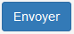
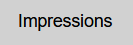
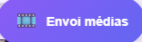

Présentation du panel invité
Le panel invité, c’est la page que les convives de la soirée vont utiliser pour mettre en ligne leurs médias. Elle est très facile d’utilisation.
Dans la suite de cette page, je vais utiliser le pronom « vous ». Cela désigne toute personne voulant envoyer un média sur PicturWall. Ce n’est pas uniquement réservé à l’animateur.
Se rendre sur le panel invité ?
Afin de se connecter au panel invité, vous devrez être préalablement connecté au réseau wifi public de PicturWall. Ensuite, vous allez ouvrir votre navigateur préféré, puis taper l’adresse URL suivante : picturwall.tv
Bien-sûr, c’est exactement la même chose sur téléphone. Vous ouvrez votre navigateur et tapez picturwall.tv dans votre barre de recherche.
Inscription
Pour s’inscrire sur le panel invité, vous devez simplement remplir votre nom et prénom (sans espace). Ensuite, vous acceptez les conditions d’utilisations, et vous cliquez sur .
Envoyer un média
L’envoi de média sur PicturWall est très simple :
Sélectionner votre média dans votre galerie photo ou prendre la photo en direct !
Écrire un Commentaire (optionnel)
Cocher (ou non) la case pour « imprimer le souvenir » !
Commentaire
Avec PicturWall, vous avez la possibilité d’ajouter un commentaire avec l’envoi de votre souvenir. Celui-ci s’affichera sur le diaporama, en haut de l’écran.
Le commentaire doit être composé d’au moins 5 caractères.
De plus, vous pouvez y ajouter un smiley, via l’icône associé à droite de la barre de commentaire .
Pour finir, vous pouvez personnaliser la couleur du commentaire envoyé grâce au sélecteur de couleur .
{kind=link}
Personnalisation
Vous pouvez changer la Couleur (par défaut) des commentaires via un paramètre du panel animateur.
Imprimer le souvenir
Important
Pour que cette case soit visible, il faut activer le service d’impression.
Grâce à PicturWall, les invités peuvent eux-mêmes imprimer leur souvenir !
Bien sûr, tout est prévu sur le panel animateur pour que vous puissiez définir une limite d’impressions par utilisateur et une limite d’impression globale.
Autoriser les invités à imprimer
Pour que cette case soit active, il faut Autoriser les invités à imprimer.
Traduire le panel invité
Le panel invité est disponible en français, et en anglais.
Pour passer de l’un à l’autre, vous avez juste à cliquer sur le drapeau correspondant en bas de page.
Ajouter une langue
Afin d’jaouter une langue au panel invité, veuillez en faire la demande à Gatien en passant via le formulaire de contact du site web.
Imprimer après coup
Vous pouvez aussi vouloir imprimer un de vos médias ultérieurement !
Pour cela, vous devez cliquer sur ce bouton : 
{kind=link}
Vous allez donc atterrir sur cette page :
Ensuite, il ne vous restera plus qu’à cliquer sur le média que vous voulez imprimer :
Et vous pouvez vous rendre jusqu’à l’imprimante pour récupérer votre média.
Autoriser les invités à imprimer après coup
Pour que les invités puissent accéder à cette page, il faut autoriser les utilisateurs à imprimer après coup.
Afin de revenir à la page d’envoi de médias, il faut cliquer sur ce bouton : 
{kind=link}
Média en or
Sur PicturWall, il existe un concept que l’on nomme « média en or ».
C’est en réalité un ou plusieurs médias que l’animateur met à disposition de tous pour l’impression. Nous détaillons cette fonction dans le panel animateur, page Édition de médias.
Les invités voient les médias mis à disposition de cette façon :
Vous pouvez imprimer ce type de média comme tous les autres.
Médias en or
Les médias en or sont tous sélectionnés par l’animateur. Par exemple, cela peut être des photos d’autres invités ou du photographe.